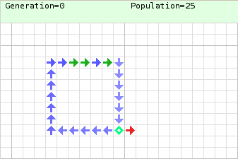

Neumann János élete
Neumann János munkássága

Kezdetek
Tudományos pályafutása kezdetén behatóan foglalkozott kvantumelmélettel, a matematika alapjaival, halmazelmélettel és matematikai logikával. Tőle származik a halmazelmélet egzakt megalapozása. Jelentős eredményeket ért el az ergodelméletben, és kifejlesztette a „folytonos geometria” elméletet is. Az ő nevéhez fűződik a játékelmélet megteremtése (minimax elv, 1928), melyet Morgensternnel készített el. Az elméletet az USA nemzeti kártyajátéka, a póker elsajátítása, a játék általános elmélete alapján fogalmazták meg. A koreai háború idején például ennek az elméletnek a kiértékelése volt az oka, hogy az USA nem támadta meg Kínát.
A számítógép tervezése
Az elektronikus számítógépek logikai tervezésében kiemelkedő érdemeket szerzett. Ennek alapvető gondolatait – a kettes számrendszer alkalmazása, memória, programtárolás, utasításrendszer – Neumann-elvekként emlegetjük. Tanácsadóként szerepelt az EDVAC – az első olyan számítógép, amely a memóriában tárolja a programot is – tervezésénél 1944-től, amelyet 1952-ben helyeztek üzembe. Ennek a számítógépnek a tervezése során fejlesztette ki az elektronikus számítógépek belső szervezésének elméletét (Neumann-elv), amelynek alapján készülnek a mai számítógépek is.
Numerikus analízis
Neumann János felismerte, hogy kihasználva a számítógépek képességét hosszú számítási sorok emberi beavatkozás nélküli elvégzésére, kiterjesztheti a numerikus módszerek hatókörét az összetettebb lineáris egyenletrendszerekre és a parciális differenciálegyenletekre is. Neumann arra is rájött, hogy a fejlettebb módszerek alkalmazásának kulcsa a számítógépek memóriakapacitásának növelése.
Közgazdaságtan
- A 30-as években Wald Ábrahám matematikussal együtt foglalkoztak egyensúlyi feltételekkel dinamikus és statikus modellekben.
- Kettőjük munkája eredményeképpen jelentősen javult a közgazdaságtani elemzés technikai színvonala, feltárták több korábbi közgazdász teoretikus és politikai elemzésének hiányosságait. Munkásságukat később olyan neves közgazdászok is felhasználták, mint Kenneth Arrow és Gerard Debreu, akik kiegészítették, és Walras általános egyensúlyi modellére alkalmazták
- 1937-ben egy bécsi konferencián Wald előadta a statikus általános egyensúly létezésének bizonyítását, Neumann pedig (általánosítva az 1928-as játékelméleti cikkét) egy dinamikus modellben igazolta az egyensúlyi növekedési pálya létezését, s ez a dualitással együtt a széleskörben használt lineáris programozás előfutára lett.

Neumann 29 állapotú celluláris automatája egyik struktúrájának animációja. Egy bináris jelet egy kék huzalos hurokban ismételten átvezetnek. A jelet egy piros huzalon is továbbküldik, és a végén dekódolják, az éppen mögötte lévő üres cellába írva. Ez a bizonyos jel (1011) egy jobbra mutató piros nyilat kódol, minden alkalommal egy cellával meghosszabbítva a piros huzalt.
Forrás hivatkozása:
Wikipedia : Neumann János